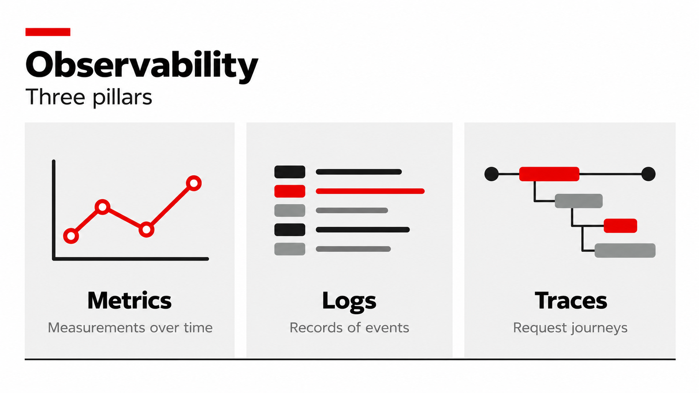

Introduction — What is AgentOps?
Traditional DevOps taught us to monitor, debug, and maintain software systems in production. But AI agents introduce new challenges: non-deterministic behavior, multi-agent orchestration, LLM quality variations, and distributed tool calls.
AgentOps extends observability practices to handle these realities. Beyond tracking request rates and latency, you need to trace agent reasoning paths, measure token consumption, validate tool call success, and continuously evaluate output quality.
This workshop shows you how.
Why Traditional Monitoring Falls Short
Traditional application monitoring tracks HTTP requests, error rates, and response times. For a typical API, that means you see something like:
POST /api/chat → 200 OK, 2.3s response timeBut for an AI-powered application, you don’t see:
-
Which tools the agent called and in what order
-
How many LLM calls happened (was it 3 or 8?)
-
Which call consumed 1.8 s of the total 2.3 s
-
Whether the agent retrieved the correct data from the database
-
If any tool calls failed silently while the agent still generated a plausible response
AI agents fail distributedly, not silently. A single user question can trigger multiple LLM calls, several tool invocations, and numerous database queries. When something fails or returns wrong data, you need to trace the entire decision path to find the root cause.
| Challenge | Why It Matters |
|---|---|
Non-deterministic behaviour |
The same question can produce different results due to LLM variations, making bugs difficult to reproduce |
Multi-step orchestration |
A single request fans out into LLM calls, tool invocations, and data lookups — any of which can fail independently |
Silent tool failures |
A tool returns empty data, but the agent proceeds anyway and generates a response based on incomplete information |
Cascading latency |
A slow database query delays the LLM call, which delays the response — but traditional metrics cannot pinpoint the bottleneck |
Token cost visibility |
Without per-request token tracking, cost allocation and budget forecasting are impossible |
This is why AgentOps requires specialised observability: you need to see inside the decision-making process, not just the HTTP wrapper around it.
What You Will Learn
In this workshop you will deploy the Inference Design Planner — an AI-powered application with MLflow tracing pre-configured — and then observe it using three complementary pillars:
| Module | Title | Type |
|---|---|---|
1 |
Introduction — What is AgentOps |
Overview |
2 |
Deploy the Demo App and Explore Logs |
Hands-on |
3 |
Tracing with MLflow |
Hands-on |
4 |
GPU and Resource Monitoring |
Hands-on |
By the end, you will be able to:
-
Deploy an AI application with built-in observability on OpenShift AI
-
Explore application logs using LokiStack and LogQL in the OpenShift Console
-
Analyse request traces, spans, tool calls, and LLM invocations in MLflow
-
Monitor GPU utilisation and pod resource consumption through OpenShift built-in monitoring
The Three Pillars of AgentOps Observability

| Pillar | What It Answers | Tool in This Workshop |
|---|---|---|
Logs |
What exactly happened and when? |
OpenShift Console + |
Traces |
Why did it happen? What was the execution path? |
MLflow Tracing |
Metrics |
How much? How fast? How loaded? |
OpenShift Observe (Prometheus + NVIDIA DCGM) |
Together these three pillars give you complete visibility into your AI application: logs for detailed events, traces for request flow and reasoning, and metrics for system health and resource usage.
Prerequisites
Before starting, confirm the following are ready:
-
A running OpenShift Container Platform cluster with RHOAI 3.5 installed
-
At least one GPU node available in the cluster (for example, NVIDIA L4, L40S, or A100)
-
A GPU hardware profile created by your administrator
-
MLflow Tracking Server deployed (via
sno-enable-all-features-35.sh) -
PostgreSQL running in
redhat-ods-applicationsnamespace (viasno-setup-maas-35.sh) -
LokiStack configured for application log collection (optional — the workshop uses built-in OpenShift container logs)
-
NVIDIA DCGM Exporter enabled for GPU metrics
-
Your login credentials (username and password provided by your instructor)
|
For a scripted environment setup (MLflow, operators, dashboard features, and more), see the RHOAI 3.5 SNO Setup Guide. It automates the full cluster preparation. |